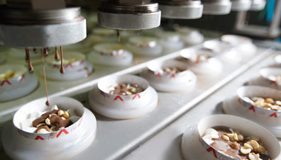
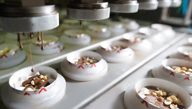

Customer Driven Marketing Strategy
of

| 1812102030 | Mahmudul Hasan Rafi |
| 1912030630 | Kh. Safwan Ibna Zahid |
| 1921660630 | Sajib Ghosh |
| 2013958630 | Meherunnesa Ila |
| 2021865630 | Md. Kausar Jamil Saumik |
| 2112135630 | \Labib Sayeed |
4th May, 2021
Tilka Farzana, Lecturer
Department of Marketing & International Business,
North-South University, Dhaka.
Subject: Submission of group report on "Customer-Driven Marketing Strategy of POLAR ICE-CREAM."
Dear Ma'am,
We are satisfied to introduce our gathering project with due honor and humble accommodation, the "Client Driven Marketing Strategy of POLAR ICE-CREAM." This task is planned for 14th April 2021 and is a prerequisite to satisfy the evaluating measures for the course MKT 202 for the semester of Spring 2021. Ideally, we have covered every one of the requirements per the rules and appended essential reports, including the annexure you requested to plan for the project. Much thanks to you such a massive amount for assisting us with the project as far as possible. We apologize for any deficiencies.
At long last, thank you for your patience and for furnishing us with the chance to learn through this group project.
Sincerely,
14) 1812102030 Mahmudul Hasan Rafi
19) 1912030630 Kh. Safwan Ibna Zahid
21) 1921660630 Sajib Ghosh
31) 2013958630 Meherunnesa Ila
32) 2021097630 Protik Biswas
33) 2021865630 Md. Kausar Jamil Saumik
38) 2112135630 Labib Sayeed
Firstly, We're grateful to our Almighty Allah for giving us the opportunity to survive in this pandemic situation. It was an enjoyable and challenging project for us. Then We want to extend our sincere thanks to our course instructor, Tilka Farzana ma'am, for her helpful advice, practical suggestions, and reviewing our project. We would also like to give thanks to our project partners and some of our close friends for providing their valuable information throughout our work. Actually, our heartfelt thanks to all the people out there who have genuinely supported us to complete the project.
The worldwide market for ice cream has been obliging the shifted taste of buyers. Like this, Polar has kept a solid situation needing Bangladeshi customers. This is incomplete because daily ice cream has become extremely famous and a necessary piece of the way of life. Polar ice cream is a brand name of the Dhaka Ice Cream Industry set up in 1987. The Authority of Dhaka Ice Cream Industry employed Denmark's specialists to begin the business with Denmark's innovation. The crude materials of the frozen yogurt are traded from Denmark. They generally attempt to give the best quality ice cream to individuals in Bangladesh. Their principal objective is to make individuals happy by having their great frozen yogurt. In 2009 the organization was repositioned by welcoming their new accomplice, familiar with numerous advanced administration methods of reasoning, and settled in a thriving execution culture on the establishments of a top-notch food handling the executive's approach. Polar turned into the first ISO 22000:2005 affirmed organization in the dairy classification in Bangladesh under this coordinated effort.
Company Name: Dhaka Ice Cream Industries limited
Product/Service: Ice Cream
Polar, a caregiver ice cream brand of Dhaka Ice Cream Industries Limited, started its journey in 1987 by introducing hygienically made and packaged ice cream in Bangladesh for the first time of which maximum ingredients were imported from Australia and Europe. That great initiative was initiated by a legendary businessman named Mr. Amanullah Miah. He called some experts from Denmark to help him producing international standard ice cream in Dhaka city. In 2009, to make its possession stronger, Polar partnered with Mr. Nazim Uddin Ahmed, a successful entrepreneur, a business graduate and an engineer, who presented numerous managerial skills to flourish the business. Polar qualified as the first ISO 22000:2005 certified company in the dairy sector in Bangladesh under his supervision. Indeed, Polar is cordially thankful to its all benefactors for their continuous help.
Their vision is “মন ভালো থাক”
To be a distinctive organization by producing and selling quality products through untiring efforts.
Polar ice cream is working to give instant happiness by providing delicious ice creams. They always try to make each moment memorable for their consumers, stating that consumer's happiness is their happiness. Thus, they draw one move nearer to accomplish its purpose.
Polar Ice Cream has the following objectives:
STP showcasing is a three-venture way to deal with building a focused on promoting plan. The "S" represents Segmenting, the "T" for Targeting, and the "P" for Positioning.
Market Segmenting is a marketing concept that refers to grouping prospective buyers into groups or segments with similar needs and responding to marketing actions in a similar way. Market segmentation helps businesses to reach various types of customers that value goods and services differently. Market segmentation aims to reduce risk by determining which products have the best chances of gaining a share of a target market and choosing the best way to deliver the products to the market. This enables the company to improve its overall efficiency by directing limited resources toward efforts that yield the highest return on investment.
The Polar Ice Cream Company can segment its business into three distinct types of segments.
Demographic segmentation is categorizing a market based on variables such as age, gender, family size, income, occupation, education, religion, race, and nationality. As one might expect, demographic segmentation variables are among the most popular bases for segmenting customer groups. The reason behind the fact that customer desires are closely related to variables such as income and age.
We can segment the Polar Ice Cream market by age, family size, generation, income and social class.
| Variables | Segment | Product |
| Age |
|
|
| Family Size |
|
|
| Income |
|
|
| Social Status |
|
|
Psychographic segmentation helps the company to comprehend the consumers better. The same demographic group such as age, personality, income, occupation, social status can have distinct Psychographic profiles. The Polar Ice Cream company can use psychographic segmentation to categorize markets based on lifestyle and personality traits.
Behavioral segmentation is consumers classified into groups based on their product knowledge, attitude toward use, or reaction to a product.
Consumers can buy ice cream occasionally; sometimes, they buy ice cream from past experiences. This depends on user status and loyalty status.
When an organization has different, undeniable market partitions, they routinely need to change promoting endeavors that appeal to each. Going through the STP cycle, the association picks what segment to zero in on for the looming activity. Focus on is evaluating the various areas. The polar frozen yogurt organization ought to figure out which and the number of units it will target. On a fundamental level, the association zeroed in on the kids, young age, and middle age, yet being frozen yogurt, here and their people from various sorts used to have frozen yogurt. They zeroed in on the understudies. In 2015 they introduced a stick lolly frozen yogurt called tamarind lolly, basically for the ladies and woman. They, in like manner, focus on the lower common laborers, regular workers, and lower working people.
Positioning is the way an organization adjusts its image or items in the objective market. The objective is to offer something more critical, better, or more important than your rivals to a specific market fragment.
Polar ice-cream makes a tremendous motivating force for frozen yogurt. They pick incredible arranging to attract the clients since they will be burned-through in the purchaser's cerebrum. They set their thing to the frozen yogurt darlings who need different tastes and a variety of flavors. They need to convey a smile to the customer's face by giving the best quality frozen yogurt. Bangladesh is a tropical country, so people, for the most part, maneuver into frozen yogurt for the climate. They fulfilled the customer's need by their best arranging.
The marketing mix strategies which are called 4P’s of marketing, fall under one of the major concepts of marketing and can be demonstrated by 4P’s. These 4P’s are: Product, Price, Place and Promotion.
Anything that is offered to the market to satisfy customers need, is called product. The three levels of a product are: Core product, Actual product and Augmented product. Core Product is mainly fulfilling the basic customer need. Actual Product refers to the tangible, physical product; specifically, the features, design and quality of a product. Augmented Product, the non-physical parts of the product, basically denotes after sale services.
Branding strategy is needed for launching a product and building a strong position for that product in the market. The four branding strategies are: Line extention, Brand extenion, Multibrands, New brands.
After analyzing all the strategies, we've indentified that Line extention perfectly goes with Polar. Line extention is when an organaization extends its current product line of an existing brand by adding some new features to the existing products, but does not launch completely new product. Polar ice cream cream is the brand of ice cream and deals with only one brand ‘Polar’. According to the line extension strategy, Polar frequently adds some new flavors of ice cream in its production line to compete with the other rivals in the market. That’s why, the branding strategy of Polar Ice Cream is Line extension.
The three major pricing strategies are: Customer value based pricing, cost based pricing, Competitor based pricing. From these three strategies, Customer value based pricing matches with Polar. Customer value based pricing means setting the price according to the consumer’s perceptions of value. In customer value based pricing, Good value pricing policy absolutely indicates Polar’s pricing method. Good value pricing is offering the right combination of quality as well as good service at a fair price. Accordingly, to maintain customer satisfaction, Dhaka Ice Cream Industries Limited has decided to produce Polar ice cream with proper hygiene and make it affordable to the consumers. So, owing to providing quality product at a reasonable price and setting price in accordance with customer’s perceived value, the pricing policy of Polar Ice Cream can be considered as Customer value based pricing.
Distribution channel or the placement of products of any company refers to the set of interdependent companies involved in making a product or service available. Generally, having a distribution system for the effects of a company is necessary to reach potential customers and to be able to keep a competitive advantage.
There is different sort of distribution channels to follow, but for polar ice cream, the best possible channel level would be channel level 3; this is an Indirect channel system where the manufacturers send the product to the present wholesalers from them to retailers finally to the consumers.
Ice creams are more considered perishable good or product as it cannot be kept unattained and needs to be taken good care of by using a freezer. To consumers, ice creams are the sort of products that can be readily available, for example, finding them in the nearest shop of their house or even easily purchasable online.
Polar is a large company with an all-in mentality and a good amount of financial backing. Thus, considering the reasons mentioned above and aspects, the polar company should utilize “channel level 3,” where the product goes from manufacturer to wholesaler to retailers and finally reaches the consumer. It is to be ensured that the intensive number of marketing intermediaries are present, which means having so many intermediaries in the channel that the products can be stocked in abundance in as many outlets as possible. This will help in reaching the customers faster and in a vast way.
Now comes the question of conventional or vertical marketing systems. No company can solely achieve the perfect marketing system by following any one method in particular. The contractual vertical marketing system could have a firm grasp over the market and sales and conventional marketing channels. A traditional channel of marketing is cheaper and is more feasible to apply and maintain. VMS system will be much more expensive yet will be organized. Utilizing that staying organized aspect using contractual VMS will help polarize some independent firms or shops at crucial points that might be missed with the conventional marketing channel system.
These usually increase both revenue and profit through sales growth. A good marketing policy that offers combo offers or discounts on fixed prices for customer growth. When the number of their customers increases, they will be able to earn more than their target.
Common forms of direct marketing include:
 
During a product’s life, it moves throw different stages of a products life cycle. It is the company’s duty to figure out at which stage of product life cycle their product belongs to and take future decisions accordingly. In the case of polar ice cream, we think they are on “Maturity stage”. Their sales have grown in the previous years but currently at a stagnant place.
During a product’s life, it moves throw different stages of a products life cycle. It is the company’s duty to figure out at which stage of product life cycle their product belongs to and take future decisions accordingly. In the case of polar ice cream, we think they are on “Maturity stage”. Their sales have grown in the previous years but currently at a stagnant place.
Discussing about the future strategies that polar should follow, we think that polar should mostly focus on the fundamental of maturity stage, which is to increase the benefits while defending market share or on other instance developing the product. Which in polar ice cream’s view would be to increase the number of flavor’s and types of ice cream. And by following this, polar can catch a bigger amount of customer’s value. Other thing polar should focus on is developing their distribution channel. Because it is true that although people know about the brand they often cannot purchase their product due to the lack of availability. We believe that if polar ice cream focuses on these strategies they can improve their business strategy and can compete even closely with their competitors.
Polar ice cream has developed an image of being a part of their consumer's life regardless of any occasion. 73.1% of the consumers related with attributes like fun and excitement while asked about polar ice-creams. 34.1% recalled old memories and nostalgia when polar ice-creams came into their mind. We can conclude that polar ice-creams have successfully created a feel-good factor in consumers' minds about their product. 79.3% of the consumers said they would still buy polar ice cream even if the price increases. Nearly 90% of people buy polar ice-creams regularly and will continue doing so no matter what. Among them, around 70% are highly loyal to the brand. Polar has been very successful in terms of Salience, Performance, and judgment. People are satisfied with the rational aspect of polar Ice-cream. They have also managed to grow an emotional attachment with their consumers.
Polar ice cream may take some initiatives in the future. They can come up with something different or new in their flavors. They can host more games and reality shows to build good relationships with the customer. They can give offers at the trade fair every year.